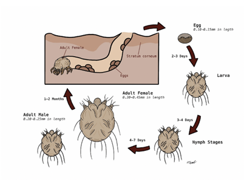
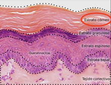
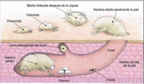

¿Qué es?
La sarna, también conocida como escabiosis, es el parasitismo por ácaros de la especie Sarcoptes scabiei variedad hominis (existen otras variedades como cani, catis… pero solo la variedad hominis permanece sobre el ser humano de manera permanente) Es un parásito obligado que necesita entrar en la piel humana para desarrollar su ciclo de vida, causando una infestación cutánea contagiosa
Morfología
Es un parásito redondeado de color grisáceo o blanco cremoso.
Las larvas tienen 3 pares de patas mientras que las ninfas y los adultos tienen 4 pares de patas.
Los adultos hembra son prácticamente el doble de grande que los machos y miden aproximadamente 0,4 mm de largo x 0,3 mm de ancho.
Ciclo biológico
Las hembras ovíferas y las hembras jóvenes fecundadas inician su actividad en zonas cutáneas en las que la piel es más fina (codos, axilas, escroto …) para lograr su penetración en la epidermis. La hembra excava túneles en el estrato córneo de la piel, proceso favorecido por el uso de sus quelíceros y los bordes cortantes de sus tibias anteriores junto con enzimas proteolíticas.
Una vez allí excavan un túnel con un avance diario de 2-3 mm, en el que van depositando sus deyecciones y hasta 3 huevos al día durante el resto de su vida (1-2 meses).
Las larvas eclosionan de estos huevos a los 2-3 días y excavan el estrato córneo para hacer una pequeña depresión cutánea llamada bolsa de la muda, en la que mudan hasta convertirse en ninfas.
Las ninfas destinadas a convertirse en hembras permanecen en dicha bolsa, mientras que las que van a dar a los machos, después de mudar a adultos emigran por la superficie cutánea para establecer contacto con las hembras jóvenes. El apareamiento sucede cuando el macho penetra en la bolsa de muda de las hembras. Las hembras, después de ser fecundadas, inician la excavación de sus propios túneles en los que depositarán los huevos con los que se iniciará un nuevo ciclo vital.
Los adultos pueden infectar al mismo hospedador en un sitio diferente o infectar a otro humano.
El ciclo completo, desde la puesta de los huevos hasta que las nuevas hembra hacen su aparición, dura unos 15-30 días. Solo unos pocos huevos llegan a ser adultos, en condiciones favorables aproximadamente un 10%.